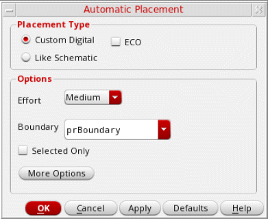
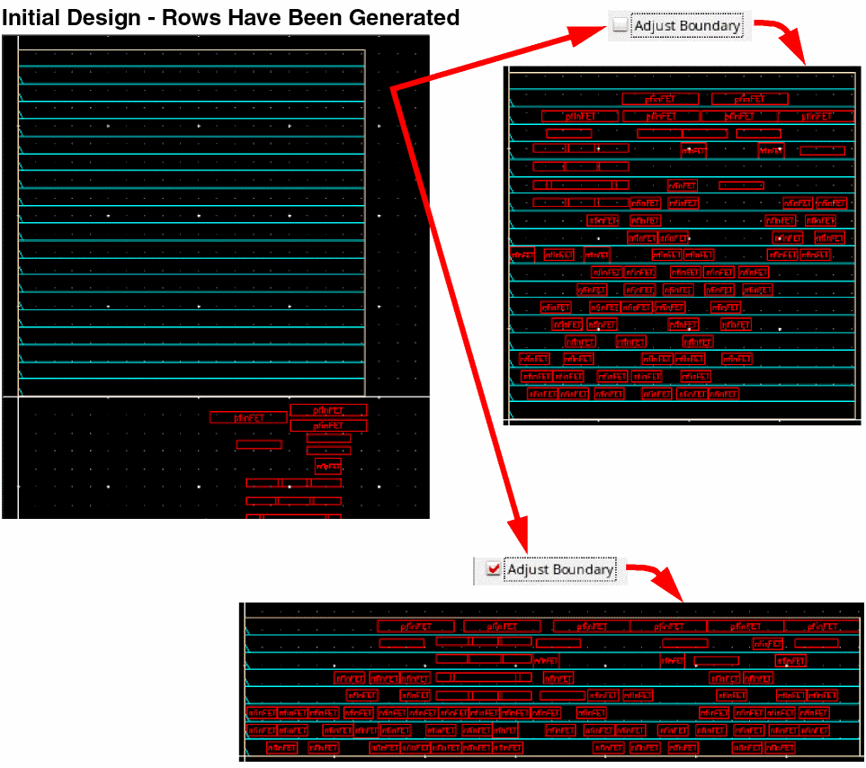
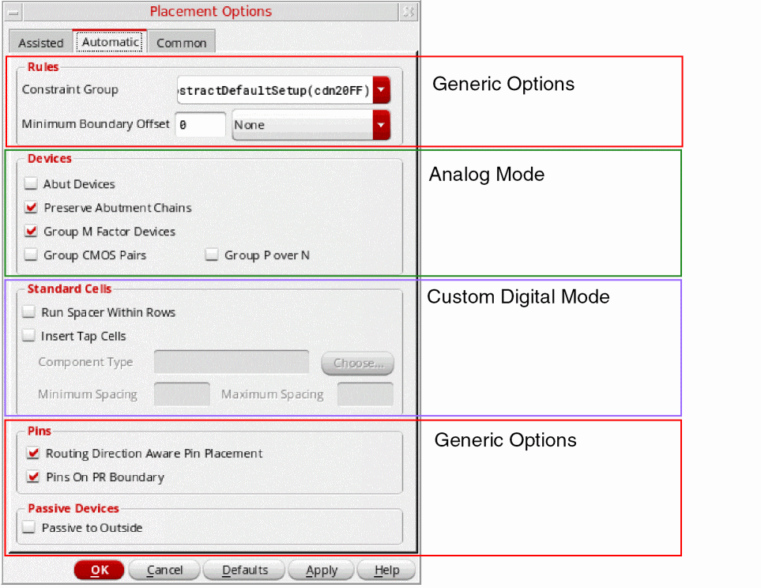

Running the Automatic Placer
The automatic placer places devices in rows defined in the layout canvas. For best results, run the automatic placer after performing Placement Planning. You can use the automatic placer for placing devices, standard cells, or a mix of both. During placement, these devices are snapped to appropriate rows and grids. The automatic placer supports placement of virtual figGroups.
The default snap depth for snap pattern mapping is set based on the display step level setting. You can use the environment variables snapPatternSnappingDepth and snapPatternSnappingDepthMethod to specify the snap depth and the method to be used to define the snap depth for snap pattern snapping, respectively.
-
Select Place – Auto Place. The Automatic Placement form is displayed.
Alternatively you can choose the Auto Place button from either the Placement toolbar or the Design Planning toolbar.
 -
Depending on your design type, choose one of the following placement types:
-
Custom Digital: Useful for placement in designs that have a higher proportion of standard cells; for example, designs with around 80% standard cells and 20% devices. A precise placement of the devices can also be achieved when devices have matched gates or are connected to the same net.
Selecting Custom Digital performs a complete initial placement of all the devices in the design. Select ECO to incrementally place any unplaced devices in the design. -
Like Schematic: Optimizes for wire length, area, and spacing patterns by placing instances as per their relative positions in the schematic design. Use the likeSchematicTolerance environment variable to specify the tolerance level. Larger tolerance levels allows the placer to use more approximate schematic correspondence to improve the placement. Valid values are
1through1000.
Choose a placer depending on which device type is the majority in your design. If there are more standard cells, use custom digital. -
Custom Digital: Useful for placement in designs that have a higher proportion of standard cells; for example, designs with around 80% standard cells and 20% devices. A precise placement of the devices can also be achieved when devices have matched gates or are connected to the same net.
-
Select one of the three Effort levels from the Options section - Low, Medium, and High.
The runtime of the placer and quality of results depend on the effort chosen. The time for each effort level increases in roughly linear increments. Selecting Low results in a comparatively less precise, but quick placement. Selecting High results in the best placement results, but takes more time than the Low and Medium effort levels.
Try the Low effort level first, because many designs perform well at this level. Low effort level is best suited for regular, structured designs with no wells through the center of the cell and non-conformal group boundaries.
However, if your design is less structured or includes a large number of constraints, try running the design at the Medium effort level. You might also consider this effort level if you have a few conformal group boundaries and wells under placer control.
If a design fails to meet your expectations at Medium effort, then increase the effort level to High. High effort utilizes the same algorithms as Medium, but exerts itself more fully on each step of the process. The default is Medium. -
If a restricted placement is desired, select the Boundary within which the placer must be run. Instead of the default PR boundary, choose a cluster boundary or a row region boundary, if available. If you select a non-PR boundary, Adjust PR Boundary is inactive.
-
Choose Adjust PR Boundary to run the placer unconstrained by the existing PR boundary.
The devices and standard cells are placed so as to achieve better QoR and wire length. After placement, the PR boundary is adjusted accordingly.
The following images depict the difference between placement with and without Adjust PR Boundary selected:
The design is compacted on each subsequent run, and therefore the total area, wire length, and space between devices keeps decreasing with each run. - Choose Selected Only to restrict placement only to the selected devices. This option is useful in situations where you have added new devices or edited existing devices after running the placer.
-
Click More Options to display the Placement Options form. Use the options on the Automatic and Common tabs to further customize placement settings. The form includes options that are generic as well as those that are specific to the Custom Digital placement type.
 - Click OK or Apply to run the placer.
Related Topics
Setting the Assisted Placement Options in the Placement Options Form
Setting Automatic Placement Options in the Placement Options Form
Setting Common Options in the Placement Options Form
Placement of Virtual FigGroups
Return to top